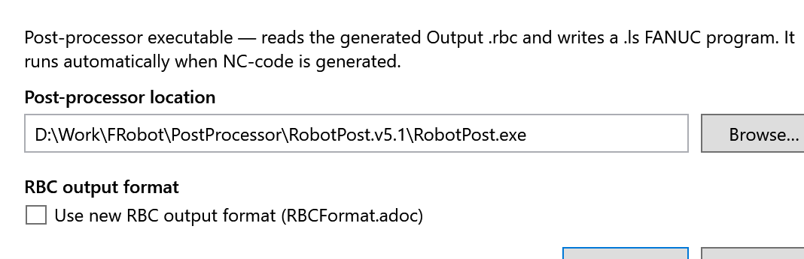

Machine Defaults
Machine Defaults sets the post-processor and the program format. Open it with settings ▸ Machine Defaults or File ▸ Tools ▸ Post-Processor….

| Setting | What it is |
|---|---|
Post-processor location |
The post-processor program, RobotPost.exe. Browse… finds it. Until it is set, the field shows a path from the developers' PC, which won’t exist on yours. |
Use new RBC output format (RBCFormat.adoc) |
Writes the .rbc in the new format. The post-processor is then not run. |
Click Save to keep the settings, or Cancel.
These settings belong to the installation, not to a cell. They are kept in Bin\postproc.cfg and Bin\machine.cfg.
Setting up RobotPost
RobotPost is not installed with FRobot.
-
Install RobotPost.
-
In Machine Defaults, click Browse… and pick RobotPost.exe.
-
Click Save.
From then on, every program FRobot writes is post-processed. The FANUC programs appear next to RobotPost.exe: see Writing the robot program.